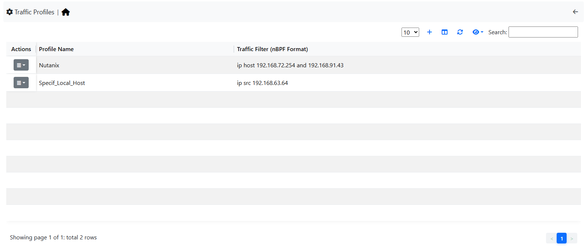
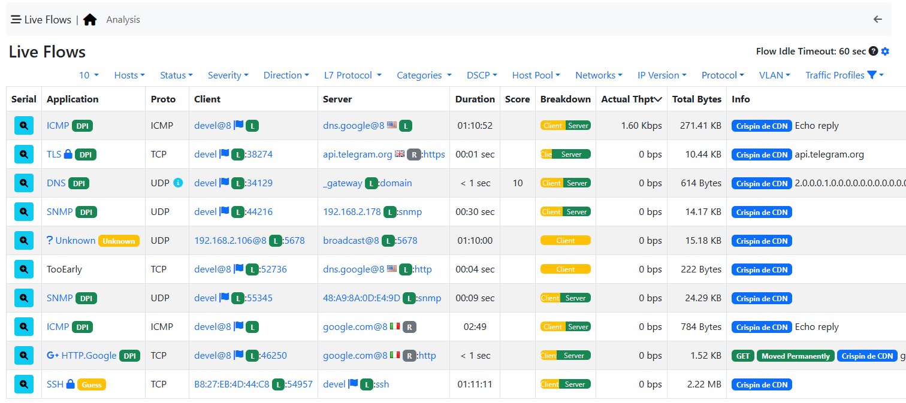
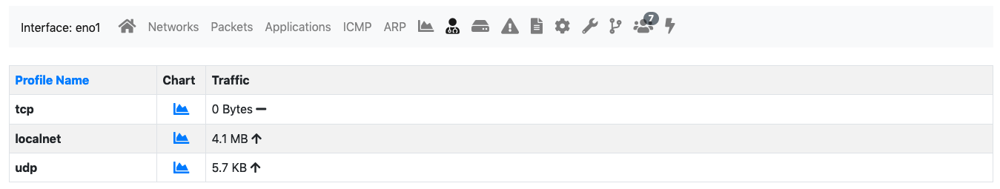
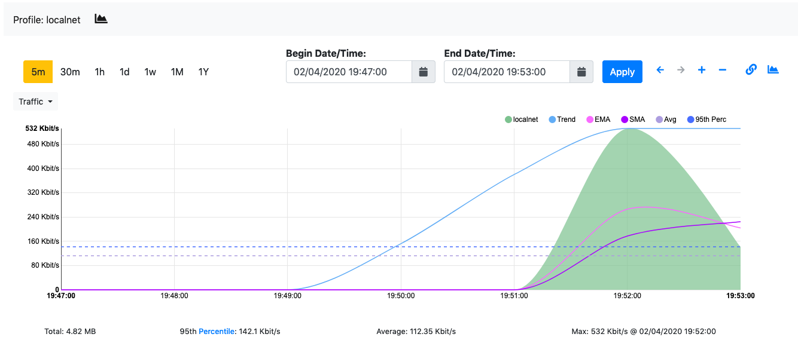

Профили трафика
Профили трафика позволяют пользователю определять логические агрегаты трафика. Примеры логических агрегатов трафик включает «TCP трафик, идущий из локальной сети 192.160.1.0/24 на хост 10.0.0.1», «трафик Facebook происходящий с хоста 192.168.10.20’ и так далее.
Профили трафика — это функция, доступная только в профессиональной версии ntopng.
Профили можно установить и настроить через раскрывающийся список. меню на верхней панели инструментов.

Страница редактирования профилей трафика
Добавить новый профиль можно, нажав кнопку + значок справа над таблицей. Также, чтобы отредактировать уже существующий профиль трафика, просто нажмите кнопку Действия кнопку и там можно редактировать Профиль.
Профили должны быть выражены с использованием синтаксиса фильтра пакетов Беркли (BPF). Фильтры будут проанализированы и синтаксис будет проверяться каждый раз при нажатии кнопки «Сохранить профиль». Ошибки возникают, если синтаксис отличается от BPF. совместимый. Подробное обсуждение BPF выходит за рамки данной работы. Кот заинтересованного читателя обратитесь к http://biot.com/capstats/bpf.html для подробного описания синтаксиса.
Профили реального времени
Профили являются мелкозернистыми и потенциально применимы к каждому обнаруженному потоку. Потоки реального времени и их назначение Профили можно просмотреть с помощью пункта меню «Потоки» на верхней панели инструментов. Аналогично, профили можно увидеть на на основе хоста, выбрав вкладку «Потоки» в контекстном меню «Сведения о хосте». Синий значок с названием профиля появится в крайнем правом столбце «Информация» каждого профилируемого потока. В примере ниже показаны два активных в данный момент потока для хоста 192.168.2.130, которые соответствуют заданному профиль локальной сети.

Профили трафика на странице активных потоков
Статистика исторических профилей
Профили доступны не только в режиме реального времени. Статистика их трафика собирается каждую минуту и сохраняется в РРД. Аналогично, если ntopng был запущен с модификатором -F, потоки будут экспортированы в ClickHouse или ElasticSearch. вместе со своими профилями. Исторические графики и таблицы доступны на странице «Информация о профиле». доступен из контекстной панели инструментов «Интерфейс». Нажав на врача! значок, можно увидеть полный список профилей, обнаруженных для выбранного интерфейса, вместе с динамикой их трафика и пропускной способности. Профиль Страницу подробностей можно открыть для каждого профиля, просто нажав на кнопку икона.

Страница сводки профилей трафика
Администраторы также могут открыть его из действия диаграммы каждого профиля в Настройки → Профили трафика. В заголовке страницы указан путь Профили трафика / <имя профиля>: нажмите Профили трафика идти вернуться к списку.
На странице сведений о профиле отображается исторический трафик профиля. Дополнительная таблица с историческими сведениями о потоках — для потоков соответствующий выбранному профилю — отображается под диаграммой, если ntopng был запущен с модификатором -F.

Страница сведений о профиле трафика
Предупреждение
В настоящее время перекрывающиеся профили не обрабатываются. Это означает, что когда поток соответствует более чем один профиль трафика, он будет закреплен за одним профилем только непредсказуемым образом.